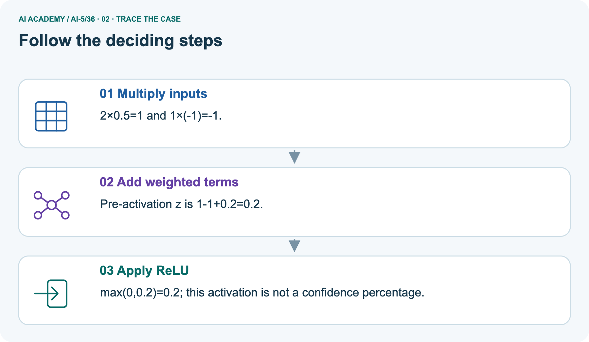
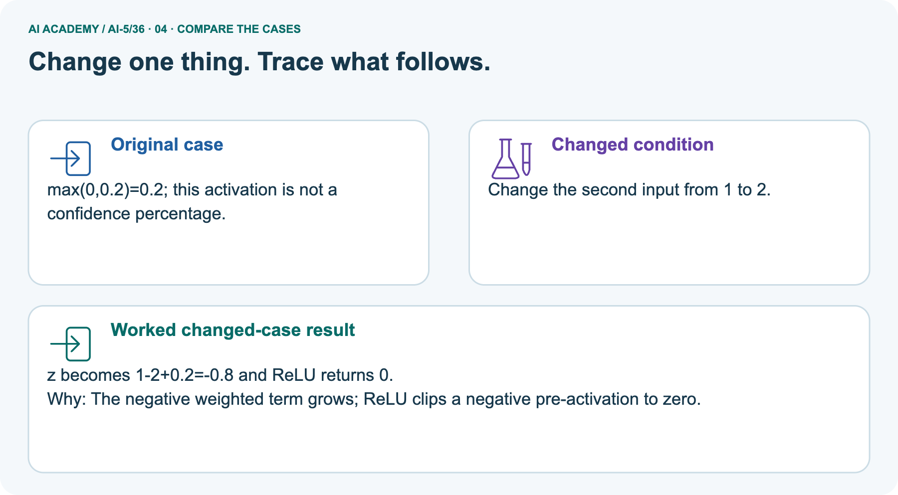
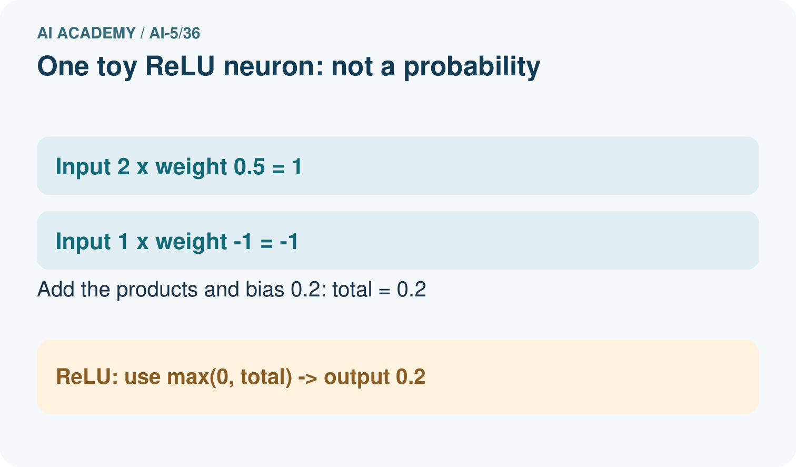
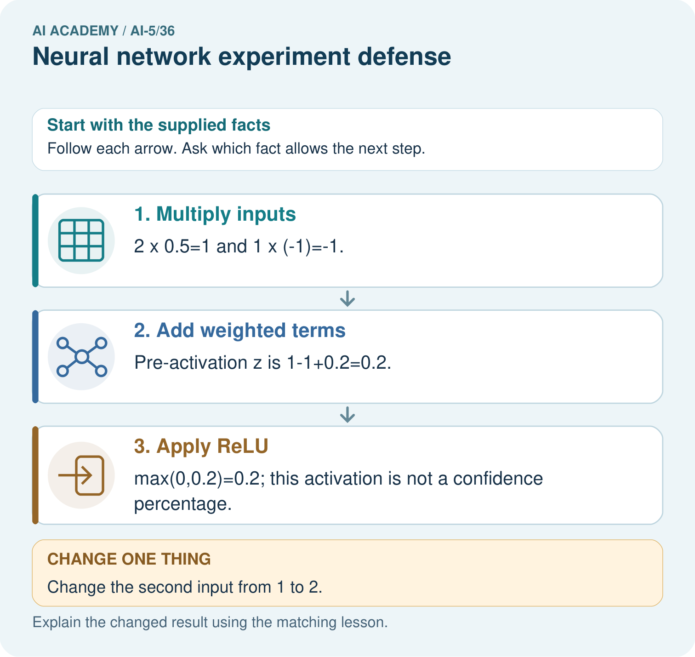
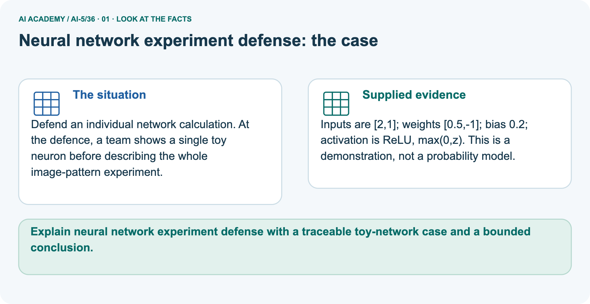
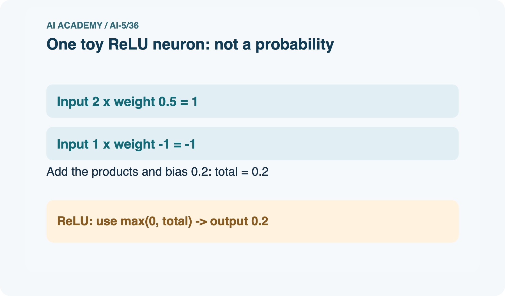
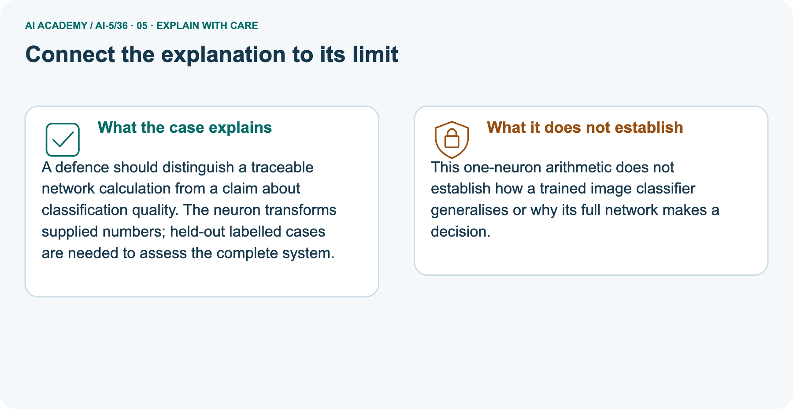
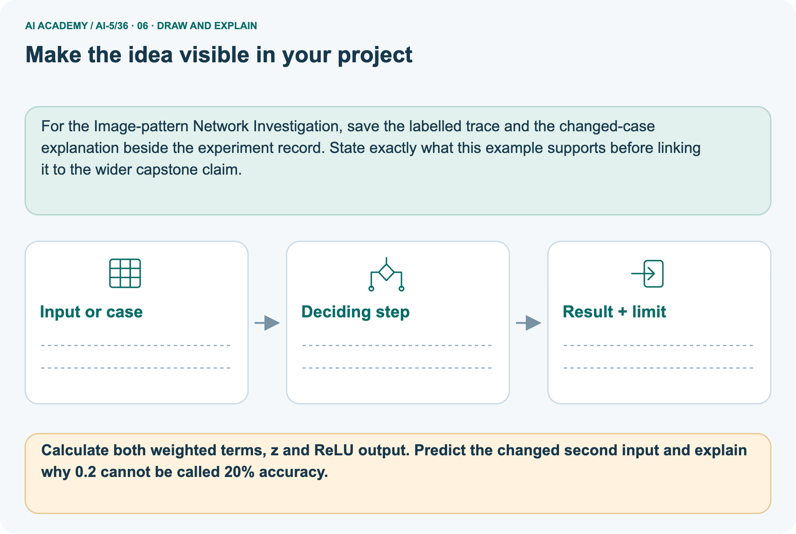

AI Academy · Level 5 · Grade 10 · Week 36 · Student lesson
Neural network experiment defense
Learn to understand, design, build, test and explain AI systems responsibly.
Project: Image-pattern Network Investigation
THE CONNECTED WEEK
Show the calculation. Name the comparison. Preserve the limit.
Defend a neural experiment using its full evidence chain and explain what remains unmeasured.
Keep one habit: Inventory → stage claims → complete final rows → challenge responses → separate neuron → executable chain → independent defense.
Main lesson · Section 1
Defend the evidence chain, including its limits
A strong explanation makes the calculations and decisions checkable.
Learning goals
I can defend a network experiment using traceable evidence.
I can separate selection, final evaluation and revision claims.
I can answer a challenge with a calculation and a bounded conclusion.
Retrieve capstone evidence
Close your notes first. A rough first answer helps us choose the right starting point; it is not a score for your ability.
Without opening the old lesson, explain one key idea from Capstone limitations and revision. Give an example and a mistake that the idea helps you avoid.
Without opening the old lesson, explain one key idea from Capstone hypothesis and baseline. Give an example and a mistake that the idea helps you avoid.
Without opening the old lesson, explain one key idea from Dataset shift in neural models. Give an example and a mistake that the idea helps you avoid.
After trying, check the relevant lesson or ask your teacher. Change the part of your explanation that the evidence shows was wrong.
Prerequisite and starting response
Can a revised model reuse inspected final rows as new independent evidence?
End goal
Explain neural network experiment defense with a traceable toy-network case and a bounded conclusion.
Earlier wording, alternatives and picture transcripts
Your learning target
Remember before reading
This week you will practise:
Defend a network experiment using traceable evidence
Separate selection, final evaluation and revision claims
Answer a challenge with a calculation and a bounded conclusion
Retrieve what you already know
This week’s end goal
Main lesson · Section 2
Assemble the complete question-to-result record
Keep validation selection separate from the frozen final comparison.
Evidence inventory and original capstone result
A defense is not a sales pitch. Assemble the original question and criterion, data roles, baseline, model equation, settings, raw checkpoints, validation selection, frozen final predictions, limitations and revision history.
Someone reading the record should be able to recompute a reported MSE and see which decisions each dataset informed.
For this capstone, two rates were compared under matched conditions. Rate 0.2 selected a = 2 with validation MSE 0 versus 0.78125 for rate 0.1.
The frozen candidate then achieved final MSE 5 versus baseline 20.25 on four constructed cases. These are different comparisons and must not be collapsed into “the network was 100% accurate”.
Name supplied and missing evidence
Main lesson · Section 3
Attach a source and a limit to each claim
A reader should be able to recompute the MSE rather than trust a slide.
Stage-by-stage evidence and permitted conclusions
| Stage | Evidence | Supported statement |
|---|---|---|
| Validation selection | Two positive rows; MSE 0 versus 0.78125 | Selected rate 0.2 by written rule |
| Frozen final comparison | Four rows; MSE 5 versus 20.25 | Lower MSE than initial-weight baseline on these rows |
| Condition check | Two negative rows; candidate MSE 10 | Nonnegative output fails to represent negative targets |
| Proposed revision | Signed output on revealed cases | A possible representational repair, not new final evidence |
Complete original frozen final rows
| Final ID | x | Target | Baseline prediction | Candidate prediction | Baseline squared error | Candidate squared error |
|---|---|---|---|---|---|---|
| F1 | 5 | 10 | 5 | 10 | 25 | 0 |
| F2 | 6 | 12 | 6 | 12 | 36 | 0 |
| F3 | -1 | -2 | 0 | 0 | 4 | 4 |
| F4 | -2 | -4 | 0 | 0 | 16 | 16 |
| Four-row MSE | Not classification accuracy | Same cases | 20.25 | 5 | Negative candidate subset | 10 on two rows |
Follow the evidence-role lanes
Keep the evidence roles separate
Explain the visual
Point to the input, the deciding step and the result in this week’s visual. Explain the same step in ordinary words. A picture helps when you can say what each part represents.
Earlier wording, alternatives and picture transcripts
Connect the picture and the explanation
Main lesson · Section 4
Answer a challenge with evidence and a bounded statement
Keep an absent comparison or measurement explicitly absent.
Current task and response
State the validation selection and frozen final comparison using their correct metrics and scopes.
Predict the changed neuron
Change: Change the second input from 1 to 2.
Check after predicting
Prediction: z becomes 1-2+0.2=-0.8 and ReLU returns 0.
Reason: The negative weighted term grows; ReLU clips a negative pre-activation to zero.
Earlier wording, alternatives and picture transcripts
Compare a familiar case with a changed case
Change one thing in the pictured case
Main lesson · Section 6
Separate a neuron demonstration from a system evaluation
A correct numerical trace does not supply a population-performance claim.
Main negative-target challenge and answer
Challenge: “Your validation error was zero, so why did the final test fail on negative targets?” Response: validation contained only positive inputs; the output max(0,a*x) cannot be negative.
The final negative cases expose a coverage and architecture limitation. The overall criterion still passed, but that does not remove the failure.
Stronger-baseline and speed challenges
Challenge: “Is a neural network better than linear regression?” Response: the supplied baseline was a fixed initial weight, not a fitted line. The evidence establishes improvement relative to that baseline only.
A fitted signed line is a relevant additional comparison and needs a documented, fair evaluation. Challenge: “Was the candidate faster?” Response: no timing evidence was collected, so speed is unmeasured.
Separate pictured neuron inputs and scope
Defend an individual network calculation. At the defence, a team shows a single toy neuron before describing the whole image-pattern experiment.
Inputs are [2,1]; weights [0.5,-1]; bias 0.2; activation is ReLU, max(0,z). This is a demonstration, not a probability model.
The picture is a separate arithmetic demonstration, not the scalar capstone’s evaluation. Inputs [2, 1], weights [.5, −1], bias .2 give weighted terms 1 and −1, preactivation .2 and ReLU output .2. Changing only the second input to 2 gives z = −.8 and output 0. There is no supplied class-reference dataset, probability conversion or accuracy denominator for this neuron.
Its output .2 cannot be called 20% confidence or 20% accuracy.
Trace multiplication, bias and activation



Read the picture one step at a time
A defence should distinguish a traceable network calculation from a claim about classification quality. The neuron transforms supplied numbers; held-out labelled cases are needed to assess the complete system.
Predict the changed second input
Change one thing: Change the second input from 1 to 2. Predict the result before checking the explanation. What remains the same?
Check after predicting



Explain unsupported percentage and generalisation claims
This one-neuron arithmetic does not establish how a trained image classifier generalises or why its full network makes a decision.
Read the labelled picture: Calculate both weighted terms, z and ReLU output. Predict the changed second input and explain why 0.2 cannot be called 20% accuracy.
Earlier wording, alternatives and picture transcripts
Learn from the worked case
Cover the result before checking it. Say what is given, choose the procedure, and follow one step at a time. Then uncover the result and explain your first mismatch. Ask why a step is allowed, not only what number it produces.
A pictorial worked case: Neural network experiment defense
The facts we will use






Why this result follows
What this example does not establish
Main lesson · Section 7
Keep relative error reduction attached to its metric
A 75% MSE reduction is not a classification-accuracy score.
Complete separate supported comparison and task
Supported case: another experiment reports baseline MSE 8 and candidate MSE 2 on four untouched final rows after freezing the candidate. The reduction is 6 MSE units, or 75% of the baseline MSE.
That percentage is a relative reduction in MSE, not 75% classification accuracy. It cannot establish deployment performance.
Identify missing fitted-line and energy evidence
A presenter claims the experiment proves neural networks beat fitted lines and use less energy. What evidence is missing?
Earlier wording, alternatives and picture transcripts
Locate the earliest unsupported step
Main lesson · Section 8
Practise an evidence inventory and an honest defense
Every claim needs a metric, cases and a comparison.
Current inventory task and supported reduction
Name eight items needed to check the capstone from question through final result.
Supported W2 record
Use workbook W2 for the connected example “Neural network experiment defense”. First fill the input and rule boxes. Try the middle steps before asking for a hint. After a hint, try the next step yourself.
| Plan | Do | Check |
|---|---|---|
| What is given? Which rule or procedure applies? | Record each intermediate step. | Does the result follow? What remains unknown? |
Explain your trace to a partner. Your partner points to one step to check. Swap roles on the next case. Each person writes their own explanation.
Individual demonstration-versus-evaluation check
Use the worked case for Neural network experiment defense. Proposed explanation: “A polished demonstration is an evaluation”. Decide whether this explanation is supported.
Point to the step or supplied fact that decides; explain your repair if needed.
Answer on your own before discussion. If you are unsure, say which step you need help with.
Pictured neuron response
Calculate both weighted terms, z and ReLU output. Predict the changed second input and explain why 0.2 cannot be called 20% accuracy.
Reserve independent C1/C2 record
This is supported practice. Keep the separately named independent case for an attempt before feedback.
Earlier wording, alternatives and picture transcripts
Practise with less help: Defend the result
Check your reasoning
Explain the picture
Main lesson · Section 9
Replay the complete chain and audit each claim
Check numerical agreement and preserve the limits on what that agreement establishes.
Current validation-versus-final task
State the validation selection and frozen final comparison using their correct metrics and scopes.
Complete executable evidence-chain replay
"""Replay the supplied capstone evidence chain; no population claim."""
train=[(1,2),(2,4)]
validation=[(3,6),(4,8)]
final=[(5,10),(6,12),(-1,-2),(-2,-4)]
def predict(weight,x):return max(0,weight*x)
def mse(weight,rows):return sum((predict(weight,x)-y)**2 for x,y in rows)/len(rows)
records=[]
for rate in [.1,.2]:
weight=1.0
history=[]
for update in [1,2]:
assert all(weight*x>0 for x,_ in train)
gradient=sum(2*(weight*x-y)*x for x,y in train)/len(train)
weight-=rate*gradient
history.append((update,gradient,weight))
records.append({'rate':rate,'history':history,'weight':weight,
'validation_mse':mse(weight,validation)})
selected=min(records,key=lambda r:(r['validation_mse'],r['rate']))
frozen_weight=selected['weight']
assert frozen_weight==2 and selected['rate']==.2
# No updates or choices below this point use the final targets.
final_ledger=[(x,y,predict(1,x),predict(frozen_weight,x),
(predict(1,x)-y)**2,(predict(frozen_weight,x)-y)**2)
for x,y in final]
baseline_mse=mse(1,final)
candidate_mse=mse(frozen_weight,final)
negative_mse=mse(frozen_weight,[(x,y) for x,y in final if x<0])
assert (baseline_mse,candidate_mse,negative_mse)==(20.25,5,10)
print('Validation selection records:',records)
print('Frozen final: x,target,baseline,candidate,baseline squared error,candidate squared error',final_ledger)
print('Final MSE baseline/candidate:',baseline_mse,candidate_mse)
print('Negative-input MSE, 2 rows:',negative_mse)
print('Scope: two positive validation rows; four constructed final rows.')
print('Unmeasured: timing, energy, fitted-line comparison, independent revised-model performance.')
# Separate supported comparison: not the main scores.
absolute=8-2;relative=absolute/8
assert (absolute,relative)==(6,.75)
print('Separate supported reduction:',absolute,'MSE units;',100*relative,'% relative MSE reduction')
# Pictured neuron: an activation, not a probability or an accuracy percentage.
def neuron(second):
z=2*.5+second*(-1)+.2
return z,max(0,z)
assert abs(neuron(1)[0]-.2)<1e-12 and neuron(2)[1]==0
print('Picture original z/output:',neuron(1),'changed:',neuron(2))
Expected checks and exposure-aware conclusions
Predict the validation choice and all final squared errors before running or tracing. This supplied replay reconstructs both training histories, selects on validation, freezes the chosen weight and then computes final scores without using final targets to update or choose parameters. Preserve the original data exposure history: a public teaching replay does not establish that a learner’s own final cases were unseen.
Keep the separate 8→2 MSE example and the separate neuron demonstration labelled. No timing, energy, fitted-line comparison or independent revised-model result is supplied. Save actual run status and question answers rather than treating a polished presentation as proof.
Evidence ledger and reflection
| Record | Your evidence |
|---|---|
| Given input and fixed rule | |
| Prediction before checking | |
| Actual result, or “not run” | |
| First mismatch and one explanation | |
| Boundary or missing input and expected response |
On paper, trace the supplied procedure. If code is provided, predict before running it in a local practice file. Never write an expected answer as though it were an observed run.
Before trying: what do I expect, and why? While trying: which step could first go wrong? Afterwards: what did I actually observe, and what should change? Keep “not run” if you only traced the procedure.
Earlier wording, alternatives and picture transcripts
Predict, investigate and preserve the evidence
Plan → try → check
Main lesson · Section 14
Try alone: defend a fresh C1/C2 evidence record
Check overall and condition-specific scores, including any worsened row.
Complete independent selection and error inputs
A separate experiment compares candidates C1 and C2 on two validation rows: MSE 1.5 and 1.0. The written rule selects lower MSE.
After freezing C2, four fresh final rows give baseline squared errors 4,9,1,2 and C2 squared errors 1,1,2,0. Compute final MSE and relative reduction.
Two condition-B rows are the last two rows; compare baseline and candidate MSE there. State what this record supports and what is unmeasured.
First attempt and support record
Attempt this case before feedback. Record any help. Earlier examples below are further practice; a case already practised with feedback cannot establish fresh transfer.
Feedback after trying
Attempt the independent case before hints. Record whether you worked alone, used a hint or followed a model. After feedback, fix the first unsupported step and explain why it changed.
A later check uses a changed case, not a copied answer.
Earlier wording, alternatives and picture transcripts
Independent case: Defend a new record independently
Attempt this without hints
A separate experiment compares candidates C1 and C2 on two validation rows: MSE 1.5 and 1.0. The written rule selects lower MSE.
After freezing C2, four fresh final rows give baseline squared errors 4,9,1,2 and C2 squared errors 1,1,2,0. Compute final MSE and relative reduction.
Two condition-B rows are the last two rows; compare baseline and candidate MSE there. State what this record supports and what is unmeasured.
Record support used: none, hint or teacher explanation. After feedback, a different case is needed to demonstrate independence.
Use feedback to improve
Main lesson · Section 11
Keep a final defense portfolio with the revision history
Include the unsuccessful conditions and unmeasured outcomes.
Project task and artifact
For Image-pattern Network Investigation, use this week’s independent task as a rehearsal for the final evidence pack: A separate experiment compares candidates C1 and C2 on two validation rows: MSE 1.5 and 1.0.
The written rule selects lower MSE. After freezing C2, four fresh final rows give baseline squared errors 4,9,1,2 and C2 squared errors 1,1,2,0. Compute final MSE and relative reduction.
Two condition-B rows are the last two rows; compare baseline and candidate MSE there. State what this record supports and what is unmeasured.
Keep actual observations separate from expected results, preserve failures, compare a baseline and explain the limits.
| Project evidence | Record |
|---|---|
| Component and version | |
| Inputs permitted at prediction time | |
| Trace and comparison with earlier work | |
| Failure, limit and human review |
Actual run or trace and limitations
For the Image-pattern Network Investigation, save the labelled trace and the changed-case explanation beside the experiment record. State exactly what this example supports before linking it to the wider capstone claim.
Earlier wording, alternatives and picture transcripts
Evidence for your project
Main lesson · Section 16
Finish by showing what the evidence supports
End with a useful next comparison and the evaluation it still needs.
Retrieve and explain
Close your notes. Explain this goal in your own words: Defend a network experiment using traceable evidence
Plan a changed-case return
If you are unsure, return to the worked picture and explain one arrow. If you are ready, change an input or assumption and justify your prediction.
Save your workbook evidence. At the next review, try a different case before opening your old answer.
Reference bank and extra practice
Choose the reference that helps your next step.
Reference · Use the mathematical words precisely
Reference · Section 5
Reference · Use the mathematical words precisely
Connect each term to a value or step in the current example.
Vocabulary and your explanation
| Word | Meaning |
|---|---|
| Defense | An explanation of methods and claims supported by inspectable evidence |
| Evidence chain | The connection from inputs and procedure through raw outputs to a reported claim |
| Limitation | A condition restricting what evidence can establish |
| Reproduction | Repeating the documented procedure to check reported outputs |
Extra challenge · Explain a stronger case
Reference · Section 10
Extra challenge · Explain a stronger case
Choose the next challenge after the main route.
Explain,repair and extend
Name eight items needed to check the capstone from question through final result.
A presenter claims the experiment proves neural networks beat fitted lines and use less energy. What evidence is missing?
Propose a fair next comparison with a fitted signed line. State how to preserve previous evidence and reserve new evaluation.
Explain → apply → challenge
Reference · Check the representation and its limits
Reference · Section 12
Reference · Check the representation and its limits
Use after practice;reserve the new independent C1/C2 error record for the first individual attempt.
Current explanation and response
Use a short presentation: question; method and controls; selection; final result; failures; revision; next question. State the small constructed sample, absent real-world coverage, limited baseline and unmeasured resource use.
A useful next question is whether a signed-output procedure improves on a fitted-line baseline under newly reserved evaluation conditions.
Passing this capstone means explaining the evidence correctly, including an unsuccessful or limited result.
Propose a fair next comparison with a fitted signed line. State how to preserve previous evidence and reserve new evaluation.
Extra practice · Revisit the complete trace
Reference · Section 13
Extra practice · Revisit the complete trace
Predict before reading the supplied steps.
Complete trace and evidence
Complete evidence record
Keep the evidence roles separate
Follow the input through the stated procedure to its result. Cover the result first, predict it, then explain every intermediate step. The text/table accompanies the figure so the example can be read without colour.
Reference · The earlier route checklist
Reference · Section 15
Reference · The earlier route checklist
Use one main route rather than repeating the lesson.
Targets,route and first prediction
Start with this question: Defend an individual network calculation. At the defence, a team shows a single toy neuron before describing the whole image-pattern experiment.
| By the end, I can | How I will show it |
|---|---|
| Defend a network experiment using traceable evidence | Explain the deciding step, show a trace or test, and state one limit. |
| Separate selection, final evaluation and revision claims | Explain the deciding step, show a trace or test, and state one limit. |
| Answer a challenge with a calculation and a bounded conclusion | Explain the deciding step, show a trace or test, and state one limit. |
Remember → watch and explain → try with help → investigate → try independently → keep project evidence. Your teacher may spread this lesson across several classes.
Keep your first prediction. Compare it with what the evidence shows and explain any change.
Extra practice · Predict,check and repair
Reference · Section 17
Extra practice · Predict,check and repair
Keep supported feedback separate from the independent case.
First supported question and optional hint
Defend an individual network calculation. At the defence, a team shows a single toy neuron before describing the whole image-pattern experiment.
Which labelled step matches this detail? max(0,0.2)=0.2; this activation is not a confidence percentage.
1. Add weighted terms
2. Apply ReLU
3. Multiply inputs
Hint if needed: Read the steps in the pictorial case. Match the supplied detail to the stage that performs or records it.
Practice 1: explain the deciding evidence
Check after the first attempt
After your attempt, compare with the supported explanation: Apply ReLU max(0,0.2)=0.2; this activation is not a confidence percentage.
A defence should distinguish a traceable network calculation from a claim about classification quality. The neuron transforms supplied numbers; held-out labelled cases are needed to assess the complete system.
Changed-case question and optional hint
Changed-case practice: Change the second input from 1 to 2. Which conclusion is supported by the supplied facts?
1. We can decide the result without examining the changed input or the procedure.
2. This one example guarantees correct results for every future input.
3. z becomes 1-2+0.2=-0.8 and ReLU returns 0.
Hint if needed: Use the changed condition and the deciding step in the pictorial trace. The answer must say what follows from those facts.
Practice 2: explain the deciding evidence
Check after the changed attempt
After your attempt, compare with the supported explanation: z becomes 1-2+0.2=-0.8 and ReLU returns 0. The negative weighted term grows; ReLU clips a negative pre-activation to zero.
Repair and retain the record
Review Capstone limitations and revision (ai-5/35). Goal: Evaluate a frozen candidate and baseline on final rows. Short practice: Calculate the slice rates and explain the claim revision.
If the team trains on the shifted evaluation patterns, what kind of evidence does their rerun provide?. Return to this week and explain what you changed.
Review Capstone hypothesis and baseline (ai-5/33). Goal: Write a testable capstone hypothesis and a credible baseline. Short practice: Name the intended change, the baseline and the measured outcome.
Why must both versions avoid training on the eight reserved labels?. Return to this week and explain what you changed.
Review Dataset shift in neural models (ai-5/30). Goal: Explain how a changed input mix can change overall accuracy. Short practice: Did the supplied model’s dim-light accuracy deteriorate?
Point to the relevant step in the picture, then write the changed result and the rule or evidence that supports it.. Return to this week and explain what you changed.
Use Download completed work in the hosted lesson to export your answers, reflections, practice feedback and code-run evidence. Open the HTML copy to read or print it.
Drafts stay in this browser when storage is available; clear drafts on a shared device.
Earlier wording, alternatives and picture transcripts
Use this supported practice once, in the browser or on paper. Keep the reserved independent assessment for a separate first attempt before teacher feedback.
Repair a missing building block
Keep your completed work
Reference · Six-picture concept journey
Reference · Section 18
Reference · Six-picture concept journey
Choose the picture that supports the current explanation.
01. Neural network experiment defense: the case



Defend an individual network calculation. At the defence, a team shows a single toy neuron before describing the whole image-pattern experiment.
Supplied facts: Inputs are [2,1]; weights [0.5,-1]; bias 0.2; activation is ReLU, max(0,z). This is a demonstration, not a probability model.
Point to the given fact that matters most. Explain why it matters.
02. Follow the deciding steps
Multiply inputs: 2×0.5=1 and 1×(-1)=-1. → Add weighted terms: Pre-activation z is 1-1+0.2=0.2. → Apply ReLU: max(0,0.2)=0.2; this activation is not a confidence percentage.
Point to each numbered stage and explain which recorded input it uses.
03. One toy ReLU neuron: not a probability



One toy ReLU neuron: not a probability. Inputs: [2, 1]; weights: [0.5, -1]; bias: 0.2; activation: relu; output: 0.2.
Read the labels and values. Explain the relationship the model shows.
04. Change one thing. Trace what follows.
Original case: max(0,0.2)=0.2; this activation is not a confidence percentage. Changed condition: Change the second input from 1 to 2. Expected result: z becomes 1-2+0.2=-0.8 and ReLU returns 0.
Reason: The negative weighted term grows; ReLU clips a negative pre-activation to zero.
Predict before checking the worked changed-case result. Name what changed and what the supplied facts allow you to conclude.
05. Connect the explanation to its limit



A defence should distinguish a traceable network calculation from a claim about classification quality. The neuron transforms supplied numbers; held-out labelled cases are needed to assess the complete system.
Limit: This one-neuron arithmetic does not establish how a trained image classifier generalises or why its full network makes a decision.
Explain the case, then point to a limit on the claim.
06. Make the idea visible in your project



For the Image-pattern Network Investigation, save the labelled trace and the changed-case explanation beside the experiment record. State exactly what this example supports before linking it to the wider capstone claim.
Draw your input, deciding step, result and limit. Supported question: Calculate both weighted terms, z and ReLU output. Predict the changed second input and explain why 0.2 cannot be called 20% accuracy.
Draw your project trace and justify the deciding step using evidence.